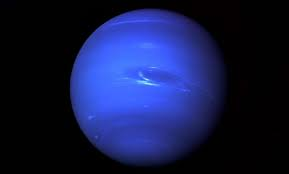
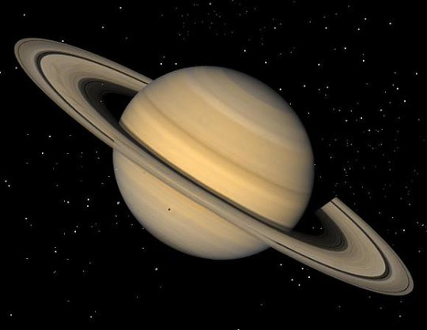

ურანი (სიმბოლო: ⛢) — მზიდან მეშვიდე პლანეტა დაშორების მიხედვით. ის რადიუსით მესამე, ხოლო მასით მეოთხეა მზის სისტემაში. ურანის შედგენილობა ნეპტუნისას ჰგავს, ხოლო ეს ორი პლანეტა გაზური გიგანტებისგან, იუპიტერისა და სატურნისგან განსხვავებულია, ამიტომაც ასტრონომები ურანსა და ნეპტუნს განცალკევებულ კატეგორიაში — „ყინულის გიგანტებში“ მოიხსენიებენ. მიუხედავად იმისა, რომ ურანის ატმოსფერო წყალბადისა და ჰელიუმის ძირითადი შედგენილობით სატურნსა და იუპიტერს წააგავს, ის შეიცავს უფრო მეტ „ყინულს“, როგორებიცაა ამიაკი და მეთანი, სხვა ჰიდროკარბონებთან ერთად.[6] მისი ატმოსფერო ყველაზე ცივია მზის სისტემაში ტემპერატურით −224,2 °C. ურანის ატმოსფეროს რთულ ფენებიანი ღრუბლის სტრუქტურა აქვს და მეცნიერთა ვარაუდით, მის ძირეულ ღრუბლებში წყალია, ხოლო ყველაზე მაღალ ღრუბლებში — მეთანი.[6] ამის საპირისპიროდ, ურანის შიდა ნაწილები ძირითადად გაჯერებულია ყინულითა და ქვით.[7]
ურანი ერთადერთი პლანეტაა, რომლის სახელიც ბერძნული მითოლოგიიდან მოდის და არა რომაულიდან, განსხვავებით სხვა პლანეტებისა. მას ცის ბერძენი ღმერთის ლათინური ვერსიის, ურანის (Ouranos) სახელი ჰქვია. სხვა გიგანტი პლანეტების მსგავსად, ურანსაც აქვს რგოლების სისტემა, მაგნიტოსფერო და რამდენიმე თანამგზავრი. ურანისეულ სისტემას ამ პლანეტათა შორის უნიკალური კონფიგურაცია აქვს, რადგან მისი ბრუნვის ღერძი თითქმის „მხარზეა წამოწოლილი“. აქედან გამომდინარე, მისი ჩრდილოეთ და სამხრეთ პოლუსები იქ არის, სადაც სხვა პლანეტების ეკვატორები.[8] 1986 წელს „ვოიაჯერ 1-ის“ მიერ გადაღებულ სურათებზე ხილულ სინათლეში ურანი თითქმის ნიშან-თვისებების გარეშე გამოჩნდა — ღრუბლების ჯგუფებისა და შტორმების გარეშე, რომლებიც სხვა გიგანტ პლანეტებთან ასოცირდება.[8] დამკვირვებლებმა დედამიწიდან შენიშნეს სეზონური ცვლილების ნიშნები და ამინდის გაზრდილი აქტიურობა, როდესაც ურანმა ბუნიაობას მიაღწია. ურანზე ქარები 250 მ/წმ სიჩქარით ქრის.[9]

ნეპტუნი
ნეპტუნი (სიმბოლო: ♆) — მზის სისტემაში რიგით მერვე ანუ ბოლო პლანეტა. ყინულის გიგანტი. ნეპტუნის ორბიტის ექსცენტრისიტეტის კოეფიციენტი 0,011214269 უდრის. მიუხედავად იმისა, რომ გაზის გიგანტთა შორის ყველაზე მცირეა, ნეპტუნი ურანზე უფრო მასიურია. მისი მასა დედამიწის 17 მასის ტოლია. ნეპტუნის ზედაპირის მინიმალური ტემპერატურა -218 °C (55 °K). ხოლო მაქსიმალური -196 °C (77 °K). მძლავრი გრავიტაციული ველის გამო მისმა შემადგენელმა გაზმა მაღალი სიმჭიდროვის კომპრესია განიცადა. ვარაუდობენ რომ მის ცენტრში ტემპერატურა 5000 °C. (5273 °K). ნეპტუნი სიდიდით მესამე პლანეტაა (დიამეტრით მეოთხე).
ნეპტუნის ატმოსფერო შედგება 90 % წყალბადისგან, 19 % ჰელიუმისგან და 1 % სხვა აირებისგან. მისი ეკვატორული დიამეტრი 49 500 კმ-ია, ხოლო პოლარული დიამეტრი 48 700 კმ. ორბიტაზე მოძრაობის სიჩქარეა 5430 მ/წმ, ხოლო მზის ირგვლივ ერთ ბრუნს 164 წელს 9 თვეს და 15 დღეს ანდომებს. თავისი ღერძის გარშემო ბრუნვის პერიოდია: 16 სთ 6 წთ 36 წმ. აფელიუმში მანძილი 4 553 946 490 კმ-ს (30.44125206 ა. ე.) უდრის, პერიჰელიუმში 4 452 940 833 კმ-ს (29.76607095 ა. ე.). საშუალო მანძილი 4 503 443 661 კმ-ია (30.10366151 ა. ე.).
ბოლო დროს ოდნავ შესამჩნევი რუხი რგოლები იქნა შენიშნული ამ ლურჯი პლანეტის ირგვლივ, თუმცა ისინი სატურნისაზე ნაკლებად მასიურია. მათი აღმოჩენისას მიიჩნევდნენ, რომ ეს რგოლები არასრული იყო, მაგრამ „ვოიაჯერ 2“-მა ეს ჰიპოთეზა უარყო. ნეპტუნს ასევე ახასიათებს 2.100 კმ/სთ სიჩქარის წყალბადის, ჰელიუმისა და მეთანის ქარები, რაც მას ლურჯ შეფერილობას აძლევს. ნეპტუნს 13 თანამგზავრი ჰყავს.მისი უდიდესი თანამგზავრი ტრიტონი გამოირჩევა რეტროგრადული ორბიტით, ექსტრემალურად ცივია -235 °C (38 °K) და მას ექსტრემალურად შეკუმშული (14 მიკრობარი) აზოტ/მეთანის ატმოსფერო აქვს.
დედამიწა
დედამიწის წარმოშობაზე პირველ მოსაზრებებს ჯერ კიდევ ძველი ბერძნები გამოთქვამდნენ, თუმცა მათი შეხედულებები მეცნიერულად დასაბუთებული არ იყო. XVIII საუკუნეში წამოყენებულ იქნა პირველი მეცნიერული ჰიპოთეზა, რომლის მიხედვითაც იგი კოსმოსური აირებისა და მტვრისგან წარმოიშვა. გამდნარი, გავარვარებული და სწრაფად მბრუნავი მასა, მიზიდულობის ძალის გავლენით, უზარმაზარ სფეროდ იქცა. დროთა განმავლობაში სფერო გაცივდა და მისი ზედაპირი მყარი ქერქით დაიფარა.
XX საუკუნეში მეცნიერთა მიერ გამოითქვა უამრავი მოსაზრება დედამიწის წარმოშობასთან დაკავშირებით. მიუხედავად ამისა, დედამიწის სფეროს წარმოშობის ზუსტი მექანიზმი დღემდე ზუსტად არავინ იცის. ამჟამად მთელ მსოფლიოში ინტენსიურად მიმდინარეობს დედამიწის ამგები ქანების, მთვარიდან ჩამოტანილი მასალისა და მეტეორიტების შესწავლა, აგრეთვე სხვა პლანეტების კვლევა კოსმოსური აპარატების მეშვეობით.

სატურნი
სატურნი (სიმბოლო: ♄; ძვ. ქართული სახელწოდებებია: კრონოსი ან ზუალი[7]) — სიშორით მეექვსე პლანეტაა მზიდან. ეს გაზის გიგანტი სიდიდით მეორე პლანეტაა მზის სისტემაში იუპიტერის შემდეგ. პლანეტას რომაული ღმერთი სატურნის სახელი ჰქვია. მისი სიმბოლოა ღმერთის კვერთხის სტილიზებული რეპრეზენტაცია - ♄. ჩინურ, კორეულ, იაპონურ და ვიეტნამურ კულტურებში პლანეტას მიწის ვარსკვლავად მოიხსენიებენ (土星), ხუთი ელემენტის ციკლის მიხედვით. ითვლება რომ სატურნის რგოლები, პირველად გალილეო გალილეიმ აღმოაჩინა, საკუთარი ტელესკოპით გაკეთებული ასტრონომიული დაკვირვებებისას (1610 წელს). თუმცა ტელესკოპის არასრულყოფილებისა და მცირე გადიდების გამო, გალილეომ ვერ ამოიცნო უშუალოდ რგოლები, მან რაღაც „უცნაური“ წარმონაქმნები დალანდა, რომლებიც ტოსკანის ჰერცოგისთვის 1610 წელს მიწერილ წერილში, „სატურნის ყურებად“ მოიხსენია.
სატურნის პირველი მაღალი გარჩევადობის ფოტოსურათები პიონერ 11 -მა 1979 წლის სექტემბერში გადაიღო 20 000 კმ-ის მანძილიდან. სურათებზე, სატურნის რამდენიმე თანამგზავრიც აღმოაჩინეს. ნასას 2023 წლის მონაცემებით სატურნს 146 თანამგზავრი ჰყავს,[8] მათ შორის ყველაზე დიდია ტიტანი. სატურნის ატმოსფეროს 96,3 % წყალბადისგან შედგება, 3,25 % ჰელიუმისგან, დანარჩენი 0,45 % სხვა აირებია.